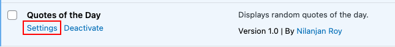
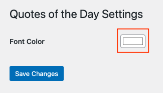

Welcome
Discover the Quotes of the Day plugin, a delightful addition to your WordPress site that brings inspiration and wisdom to your visitors. This plugin empowers you to effortlessly showcase a fresh and meaningful quote every time you reload.
Features
Elevate your website with a touch of wisdom:
- Display captivating random quotes on your WordPress site.
- Engage and uplift your audience with daily inspiration.
- Simple installation and integration.
Installation
- Upload the
quotes-of-the-dayfolder to the/wp-content/plugins/directory or - Download the ZIP file from Github and upload using Add New Plugin option and upload.
- Activate the plugin through the 'Plugins' menu in WordPress.
Usage
Enrich your content with thought-provoking quotes could not be more easier.
Use the shortcode [quotes_of_the_day] anywhere on your posts or pages or on widgets to effortlessly display a captivating quote that you have saved with your readers.
Customizing Styles
Personalize the aesthetics of the quotes:
To tailor the appearance of the quotes, modify the quotes-of-the-day-style.css file to match your website's design, creating a harmonious visual experience for your visitors.
Changing Font Color
You can change the font color of the displayed quotes through the plugin's settings page:
- Go to your WordPress admin dashboard.
- Click on "Settings" in the left-hand menu.
- Click on "Quotes of the Day" to access the plugin's settings.
- Locate the "Font Color" option and select your desired font color using the color picker.
- Click the "Save Changes" button to apply the changes.
 
Frequently Asked Questions
How do I add my own quotes to the plugin?
You can easily add your own quotes to the $quotes array in the plugin's main file quotes-of-the-day.php.
How do I customize the appearance of the quotes?
You can customize the appearance of the quotes by modifying the quotes-of-the-day-style.css file.